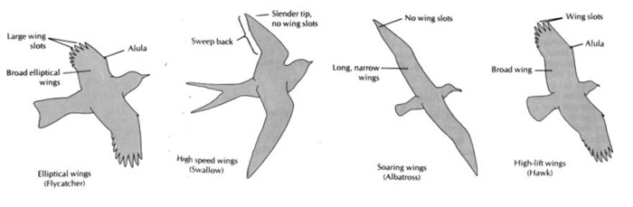
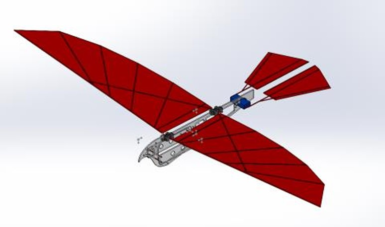
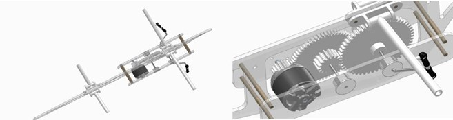
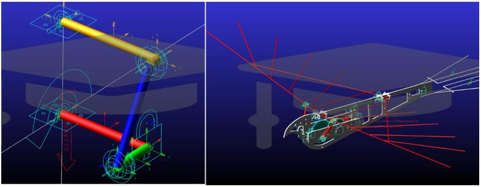
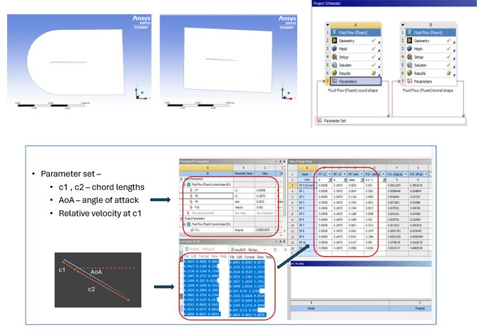
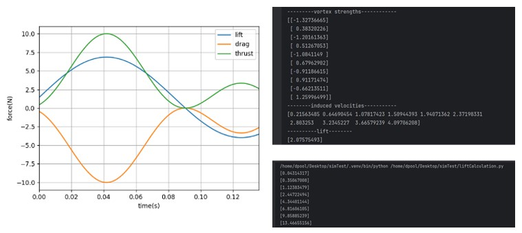
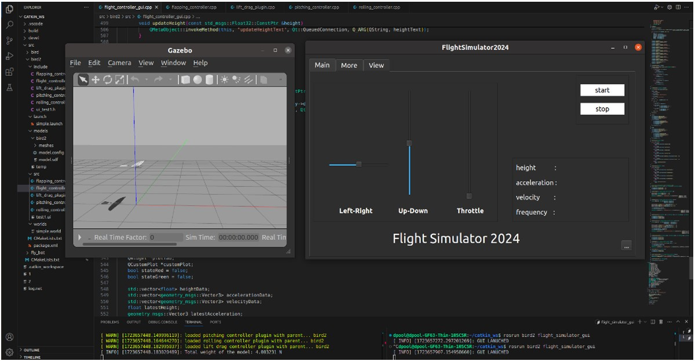
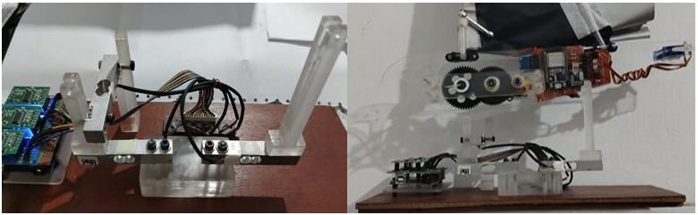
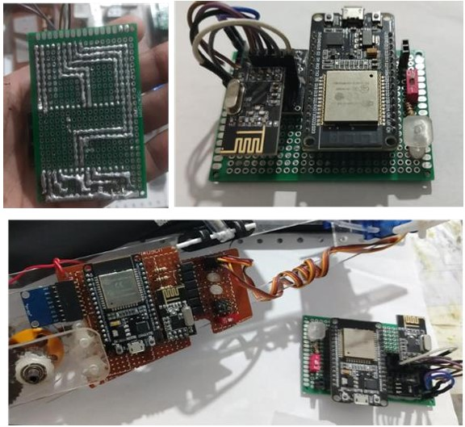

Flapping-Wing Robot
What it is
A complete bio-inspired ornithopter — designed, simulated, fabricated, and force-validated end-to-end. From a Solid Edge assembly through multibody dynamics and CFD through a custom ROS+Gazebo simulator through a physical prototype flying on an ESP32-controlled radio link.
This was my turning point. The first project where I carried a system from CAD through FEA, CFD, simulation, embedded communication, and physical prototyping — and the first time I discovered that the failure modes of a simulation are just as instructive as the failure modes of hardware.
Design
Wing geometry was derived from avian scaling laws, not arbitrary choice. An elliptical planform was selected after comparing loading characteristics against five biological wing types. The single-wing mechanism was chosen over a folding 4-bar linkage to reduce part count and keep the structure light enough to hit the target flap frequency without exciting its first vibration mode.


The gearbox
Three-stage reduction (pinion → intermediate → output) designed in Solid Edge's gear module. Torque multiplication to drive the wing linkage against aerodynamic damping, while keeping the motor in its efficient RPM band.

Structural validation
MSC Adams multibody dynamics predicted torque and force on every joint and bracket across a full flapping stroke. Results drove material and geometry iteration before a single part was printed. Peak ball-joint forces reached ±0.15 N. Topology optimization removed ~30% of mass from the output gear while keeping stress below the PLA yield derated for FDM anisotropy.

Aerodynamics
Two independent methods cross-validated each other. The Vortex Lattice Method gave a first-pass estimate across the flapping cycle, ANSYS 2D CFD provided ground-truth lift and drag coefficients at representative wing cross-sections. Where VLM converged, the two agreed — which gave confidence to trust CFD alone at high flapping rates.


The simulator
Instead of MATLAB/Simulink, the aerodynamic model was built directly in ROS + Gazebo — the same middleware ecosystem as modern UAV stacks. Four custom plugins apply forces to the flapping model at each simulation step, driven by real coefficients computed offline in ANSYS and VLM.

Custom aerodynamic plugins
flapping_controller_plugin // Wing motion driven by motor velocity pitching_controller_plugin // Tail pitch → pitching moment rolling_controller_plugin // Asymmetric flapping → roll moment lift_drag_plugin // Aerodynamic forces per flap phase
The core insight exploited: membrane-wing aeroelasticity produces net positive average lift per flap cycle, unlike a rigid wing which can produce zero net lift at certain frequencies. This was confirmed on the physical test bench — the flexible wing outperformed the rigid variant.
The prototype
Fabricated in stages: skeleton and gearbox first, then refined brackets and a replacement for the original ball joints after the first version failed under cyclic flapping loads. A servo-actuated tail manages yaw and pitch through asymmetric rotations.

Test bench
Three load cells (10 kg range) with Arduino-based data acquisition measured vertical and horizontal force at takeoff. The bench was the ground truth — where numerical prediction and physical measurement disagreed, physical measurement won.


The hard part
Every failure here was a mismatch between the assumptions of a tool and the physics of the real system. The fix was never to force the tool to work — it was to recognize the mismatch and switch approaches.
FAILURE · VLM CONVERGENCE AT HIGH FLAP FREQUENCIES
The Vortex Lattice Method worked cleanly at 2 Hz, degraded at 4 Hz, and produced divergent results at 6 Hz — the exact frequency the design needed to hit. Root cause: strongly unsteady wake dynamics that the steady-state VLM formulation assumes away.
Fix: Hybrid approach — retained VLM for the low-frequency envelope, switched to ANSYS 2D CFD at representative cross-sections for the high-frequency regime. Where the two overlapped, they agreed.
FAILURE · 3D-PRINTED STRUCTURAL FATIGUE
FDM-printed PLA has anisotropic strength: strong in the print plane, weak at layer boundaries. Early brackets and coupler links failed under cyclic flapping loads — not from peak stress, but from fatigue along layer lines.
Fix: Three-pronged — increased wall thickness at high-stress corners, changed print orientation so layer lines ran perpendicular to load direction, and redesigned the ball joints into a through-bolt geometry that eliminated the failure location.
FAILURE · AUTO-FLIGHT CONTROL DESCOPED
The original plan included IMU-based semi-autonomous flight with switchable manual/auto modes over the ESP32 + nRF24L01 link. Integrating attitude estimation into a reliable radio link within the project timeline proved infeasible.
Decision: Descoped autonomy to keep the prototype flying under manual control. A working manual prototype is worth more than a broken autonomous one — but it left a clear direction for future work.